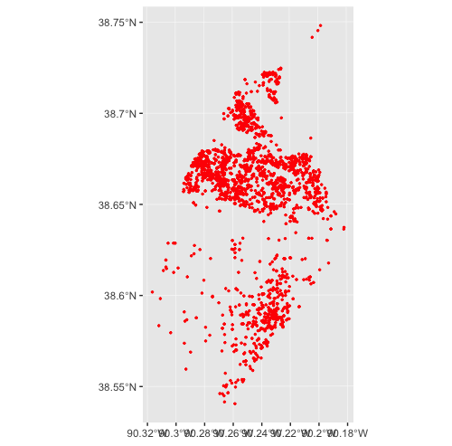

Using the stlcsb Package
Branson Fox and Christopher Prener
2019-02-07
Source:vignettes/stlcsb.Rmd
stlcsb.RmdOverview
The stlcsb package is meant to provide easy access to the City of St. Louis Citizen’s Service Bureau data in R
Tips
- All functions support non-standard evaluation, meaning you can use either quoted or unquoted inputs for arguments.
- Use RStudio for its helpful auto completion ability. Type
csb_to see all of the functions available in this package, orcat_to see all of the category data objects. - All functions return data as a tibble, which is essentially identical to a data.frame, except for its print behavior in the console and in notebooks.
Downloading CSB Data
Before using the other functions, you will need to acquire the CSB data. The csb_get_data function will download the most recent version of the data, and return it as a single tibble. By default, variable names are clean-up automatically and two variables that largely containing NA values are removed (PROBCITY and PROBZIP). Variables are also reordered in a more logical fashion.
> csb <- csb_get_data()
trying URL 'https://www.stlouis-mo.gov/data/upload/data-files/csb.zip'
Content type 'application/x-zip-compressed' length 60999726 bytes (58.2 MB)
==================================================
downloaded 58.2 MB
>
> names(csb)
[1] "requestid" "datetimeinit" "probaddress" "probaddtype"
[5] "callertype" "neighborhood" "ward" "problemcode"
[9] "description" "submitto" "status" "dateinvtdone"
[13] "datetimeclosed" "prjcompletedate" "datecancelled" "srx"
[17] "sry" The tidy = FALSE argument for csb_get_data() will return a tibble with both variables as well as the original variable names in the order they are disseminated by the City:
> csb <- csb_get_data(tidy = FALSE)
trying URL 'https://www.stlouis-mo.gov/data/upload/data-files/csb.zip'
Content type 'application/x-zip-compressed' length 60999726 bytes (58.2 MB)
==================================================
downloaded 58.2 MB
>
> names(csb)
[1] "CALLERTYPE" "DATECANCELLED" "DATEINVTDONE" "DATETIMECLOSED"
[5] "DATETIMEINIT" "DESCRIPTION" "NEIGHBORHOOD" "PRJCOMPLETEDATE"
[9] "PROBADDRESS" "PROBADDTYPE" "PROBCITY" "PROBLEMCODE"
[13] "PROBZIP" "REQUESTID" "SRX" "SRY"
[17] "STATUS" "SUBMITTO" "WARD" It is also possible to only import a single year or a range of years:
Variable Definitions
The csb_load_variables() function is available to provide descriptions of each variable. Like csb_get_data(), this function returns the tidy version by default, but can be set to return the regular version as well (with tidy = FALSE):
> csb_load_variables()
trying URL 'https://www.stlouis-mo.gov/data/upload/data-files/CSB-Request-Dataset-Field-Definitions.xlsx'
Content type 'application/vnd.openxmlformats-officedocument.spreadsheetml.sheet' length 4976 bytes
==================================================
downloaded 4976 bytes
# A tibble: 17 x 2
Name Description
<chr> <chr>
1 requestid System generated unique record number
2 datetimeinit Date/Time the request was initiated...
3 probaddress The address where the problem is occurring
<OUTPUT TRUNCATED>Categorization
The most important challenge with these data are the lack of intelligible categorization of Problem codes. These categories were created by hand - we selected like problem codes and created meta-categories that represented an overarching concept.
Each category is available in a named character vector that begins with cat_. They are used internally and are also exported for reference and extension:
> unname(cat_vacant)
[1] "Vacant Unit Appeal" "Vacant Unit Appeal t" "Debris-Vacant Bldg"
[4] "Debris-Vacant Lot" "Missed Cut - V Lot" "Missed Cut - VBldg"
[7] "Unsatisfy Cut - VLot" "Unsatisfy Cut -VBldg" "Weeds-Vacant Bldg"
[10] "Weeds-Vacant Lot" "WTR-VACANT-BLDG" "VACANT BLDG INITIV"
[13] "Vacnt Bldg Unsecured" "Vcnt weed check-web" "LRA Board up"
[16] "Misc-LRA" "Misc-Op Brightside" "Building Collapse"
[19] "Property Damage-LRA" Applying Categories
There are several functions available to represent data categorically. csb_categorize() can be used to categorize data based on its problem code:
> csb <- csb_categorize(csb, var = problemcode, newVar = cat)
> head(csb$cat)
[1] "Traffic" "Maintenance" "Maintenance" "Maintenance" "Road" "Maintenance"csb_filter() can be used to filter the data based on these same categories. Category takes single or vector arguments:
> csbSub <- csb_filter(csb, var = problemcode, category = c(cat_construction, cat_debris))
>
> nrow(csb)
[1] 1160418
> nrow(csbSub)
[1] 140920Finally, csb_vacant() is used for appending a logical vector indicating vacancy related problem codes. It is important to know that vacant exists inclusive of other categories, or in other words, a problem code will vacancy related in addition to its association with a more general category.
Removing Cancelled Calls
csb_cancelled() is used for the removal of CSB requests that were cancelled. By default it deletes the column specified (in this case datecancelled) since it will contain only NA values after the data are subset.
Spatial Features
The stlcsb package also provides helpful functions for dealing with spatial data. The csb_missingXY() function is used to identify observations with incomplete or invalid spatial data:
> csb <- csb_missingXY(csb, varX = srx, varY = sry, newVar = missingXY)
> head(csb$missingXY)
[1] FALSE FALSE FALSE FALSE FALSE FALSEThe csb_projectXY is used to create a simple features object, which can then be manipulated using the sf package or plotted using any of the mapping packages for R. It is critical missing spatial data be removed prior to executing this function:
Time and Date
The package offers two functions for handling time and date. The csb_date_filter()function is used to subset observations for a specified time period. It is flexible in syntax, accepting 3 letter abbreviations, full month names, or a numeric argument:
csb_date_filter(csb, datetimeinit, day = 1)
csb_date_filter(csb, datetimeinit, day = 1:15, month = 1)
csb_date_filter(csb, datetimeinit, month = "January", year = 09)
csb_date_filter(csb, datetimeinit, month = c("jan", "feb", "Mar", "Apr"), year = 2009)
csb_date_filter(csb, datetimeinit, day = 1:15, month = 1:6, year = 08:13)The csb_date_parse() is used to parse part of, or whole dates from observations. It too can delete the original date variable. Arguments are the names of the variables to be appended to the data.
csb_date_parse(csb, var = datetimeinit, day = dayInit)
csb_date_parse(csb, var = datetimeinit, day = dayInit, month = monthInit)
csb_date_parse(csb, var = atetimeinit, month = monthInit)
csb_date_parse(csb, var = datetimeinit, month = monthInit, year = yearInit)
csb_date_parse(csb, var = datetimeinit, day = dayInit, month = monthInit, year = yearInit, drop = TRUE)Full Example: Mapping Potential Vacant Properties in Summer 2017
Data Cleaning Workflow
The following is an example of a full workflow for importing the data, filtering for vacancy indicating problem codes, filtering by time, removing observations with missing spatial data, and projecting it to an sf object. Notice that the pipe operator %>% from magrittr is used. This passes the output of the prior function to the first argument of the next function, reducing typing and making code easier to read.
csb <- csb_get_data(year = 2017)
csb %>%
csb_filter(var = problemcode, category = cat_vacant) %>%
csb_date_filter(var = datetimeinit, month = c("Jun", "Jul", "Aug")) %>%
csb_missingXY(varX = srx, varY = sry, newVar = missingXY) %>%
dplyr::filter(missingXY == FALSE) %>%
csb_projectXY(varX = srx, varY = sry) -> vacant_sfMapping CSB Data
Once the data have been projected, they can be previewed with a package like mapview:

These data can also be mapped using ggplot2 once they have been projected:

Getting Help
- If you are new to
Ritself, welcome! Hadley Wickham’s R for Data Science is an excellent way to get started with data manipulation in the tidyverse, whichstlcsbis designed to integrate seamlessly with. - If you are new to spatial analysis in
R, we strongly encourage you check out the excellent new Geocomputation in R by Robin Lovelace, Jakub Nowosad, and Jannes Muenchow. - If you have questions about using
stlcsb, you are encouraged to use the RStudio Community forums. Please create areprexbefore posting. Feel free to tag Chris (@chris.prener) in any posts aboutstlcsb. - If you think you’ve found a bug, please create a
reprexand then open an issue on GitHub.